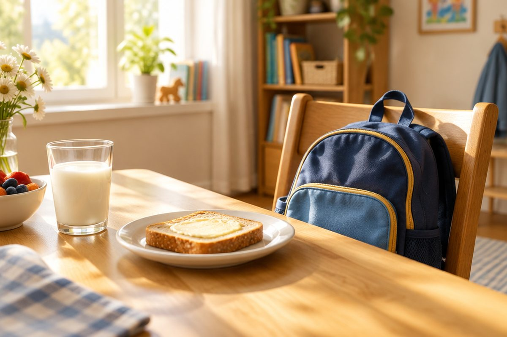

'먹어요, 가요, 봐요'는 일본어로 어떻게 말할까?

"나는 빵을 먹어요.", "학교에 가요." 내가 하는 일을 말하려면 움직임을 나타내는 말(동사)이 필요해요. 오늘은 일본어 동사를 공손하게 말하는 ~ます를 배워요.
~ます 는 '~해요'
일본어 동사를 공손하게 말할 때는 끝이 ~ます(masu, 마스)로 끝나요. 한국어의 '~해요'와 비슷해요.
たべます(tabemasu, 타베마스) 먹어요, のみます(nomimasu, 노미마스) 마셔요, いきます(ikimasu, 이키마스) 가요, みます(mimasu, 미마스) 봐요.
ます의 す는 약하게 소리 나서 '마스'처럼 들려요.
たべます 먹어요 · のみます 마셔요 · いきます 가요 · みます 봐요
하루 생활을 말해 봐요
おきます(okimasu, 오키마스) 일어나요, ねます(nemasu, 네마스) 자요, あそびます(asobimasu, 아소비마스) 놀아요, べんきょうします(benkyou shimasu, 벵쿄- 시마스) 공부해요.
시간 뒤에 に(ni, 니)를 붙이면 '~시에'가 돼요. しちじに おきます는 '7시에 일어나요'예요.
しちじに おきます。(shichiji ni okimasu, 시치지니 오키마스) → 7시에 일어나요.
を・に・で 짝꿍 글자
무엇을 하는지는 を(o, 오): パンを たべます(팡오 타베마스) '빵을 먹어요'.
어디로 가는지는 に(ni, 니): がっこうに いきます(각코-니 이키마스) '학교에 가요'.
어디에서 하는지는 で(de, 데): こうえんで あそびます(코-엔데 아소비마스) '공원에서 놀아요'.
テレビを みます。(terebi o mimasu, 테레비오 미마스) → 텔레비전을 봐요.
안 해요는 ~ません, 했어요는 ~ました
ます를 ません(masen, 마센)으로 바꾸면 '안 해요'가 돼요. たべません은 '안 먹어요'예요.
ます를 ました(mashita, 마시타)로 바꾸면 '했어요'가 돼요. たべました는 '먹었어요'예요.
질문은 끝에 か를 붙여요. なにを たべますか(나니오 타베마스카)는 '무엇을 먹어요?'예요.
たべます(먹어요) → たべません(안 먹어요) → たべました(먹었어요)
핵심 낱말
- ~ます
- 동사를 공손하게 말하는 끝 '~해요' (masu, 마스)
- ~ません
- '~안 해요' (masen, 마센)
- ~ました
- '~했어요' (mashita, 마시타)
- を
- 무엇을 하는지 (o, 오)
- に
- 어디로 가는지, 몇 시에 (ni, 니)
- で
- 어디에서 하는지 (de, 데)
꼭 알아야 할 표현
| たべます。 | 먹어요. | tabemasu (타베마스) |
| のみます。 | 마셔요. | nomimasu (노미마스) |
| いきます。 | 가요. | ikimasu (이키마스) |
| みます。 | 봐요. | mimasu (미마스) |
| おきます。 | 일어나요. | okimasu (오키마스) |
| ねます。 | 자요. | nemasu (네마스) |
| べんきょうします。 | 공부해요. | benkyou shimasu (벵쿄- 시마스) |
| パンを たべます。 | 빵을 먹어요. | pan o tabemasu (팡오 타베마스) |
| がっこうに いきます。 | 학교에 가요. | gakkou ni ikimasu (각코-니 이키마스) |
| こうえんで あそびます。 | 공원에서 놀아요. | kouen de asobimasu (코-엔데 아소비마스) |
| たべません。 | 안 먹어요. | tabemasen (타베마센) |
| たべました。 | 먹었어요. | tabemashita (타베마시타) |
한 줄 정리
- 동사를 공손하게 말할 때는 ~ます(마스): たべます, いきます, みます
- 무엇을 → を, 어디로・몇 시에 → に, 어디에서 → で
- 안 해요는 ~ません, 했어요는 ~ました, 질문은 끝에 か를 붙여요.
학교 교육과정 연결 (가정 학습 과정)
초등학교 정규 교육과정에는 일본어가 없어요. 처음 배우는 아이를 위한 가정 학습용 입문 단원이에요.